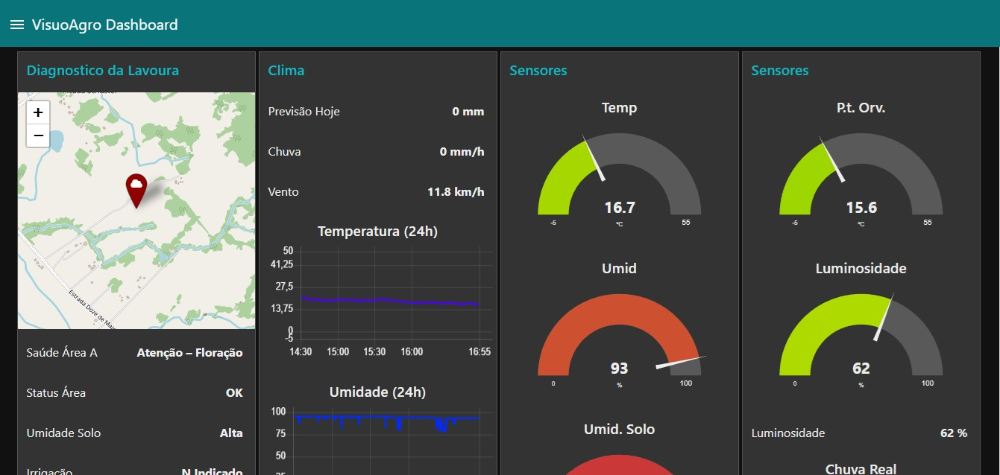
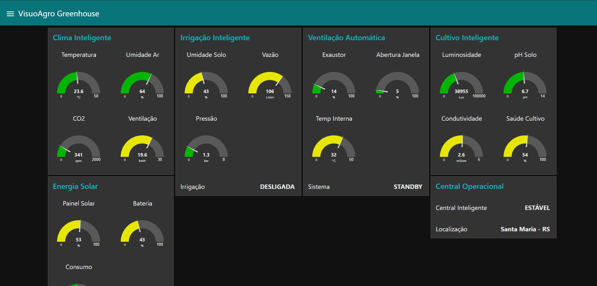
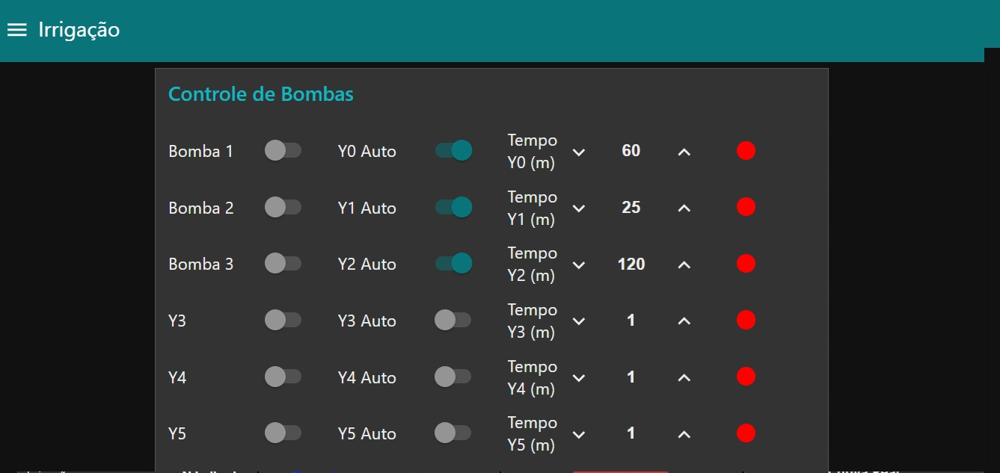

ProtoNest
Automação
Plataforma desenvolvida para transformar dados do campo em decisões inteligentes através de sensores, inteligência artificial, automação e monitoramento remoto.
O VisuoAgro integra sensores climáticos, monitoramento de solo, irrigação inteligente, visão computacional com IA e automação agrícola em uma única plataforma acessível de qualquer lugar.

Visualize temperatura, umidade, chuva, vento, solo e dados da lavoura em tempo real através de dashboards inteligentes com acesso remoto.

Controle automático de ventilação, irrigação, temperatura e umidade para estufas agrícolas e plantio vertical.

Sistema inteligente de irrigação baseado em sensores, previsão climática, umidade do solo e automação em tempo real.
Descubra como a ProtoNest está transformando o agronegócio com inteligência artificial, automação e monitoramento inteligente para lavouras, irrigação e agricultura de precisão.